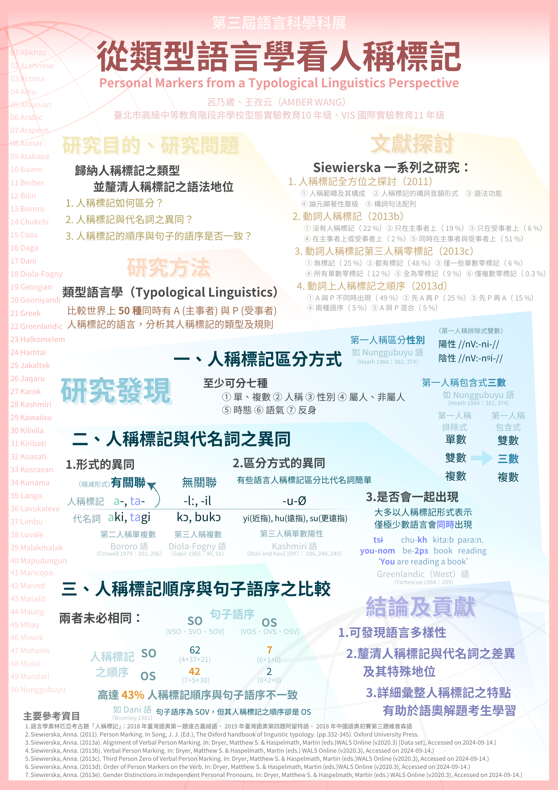

Linguistics
語言學
語言學研究 · 語言奧林匹亞
Research
研究成果
Beyond Decimal: Typological Patterns and Hierarchies in Numeral Systems
從語言類型學視角分析南島語系及其他語族的數詞系統，探討超出十進位框架的計數結構、數詞等級性（numeral hierarchy）與跨語言的蘊含共性。
馬祖語否定詞研究
針對馬祖列島通行的閩東語方言——馬祖語之否定結構進行描述與分析，探討否定詞的句法位置、語義範域及其與標準閩東語的異同，並建立初步語料集供後續研究使用。

A0 展示海報
從類型語言學看人稱標記
從類型語言學（linguistic typology）視角，跨語言比較人稱標記（person marking）在動詞屈折、代名詞系統及一致關係（agreement）中的分布規律，歸納標記的蘊含共性（implicational universals）並檢驗現有理論的解釋力。

科展展示海報
Awards